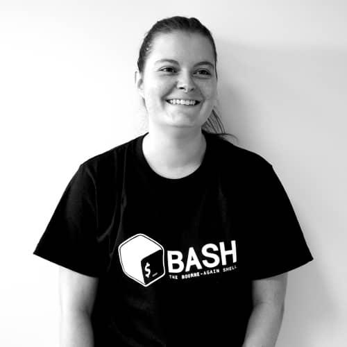

L’impact sur des personnes qui maintiennent des logiciels libres,
qui n’utilisent pas (et ne le souhaitent pas) l’IA.
Un peu de contexte
C’est qui "on" et c’est quoi ces logiciels ?
Le "on"
Guillaume Ayoub (liZe)
+

Lucie Anglade (grewn0uille)
=
Les logiciels
Une bibliothèque Python qui génère des PDF à partir de HTML et CSS.
Et ses dépendances :
tinycss2
cssselect2
Pyphen
pydyf
webencodings
Un peu d’historique 🦫
Création de WeasyPrint en 2011, en tant que projet d’entreprise.
Libre dès le début.
Création de CourtBouillon en 2020, avec pour but de vivre du logiciel libre.
Aujourd’hui, WeasyPrint c’est 9515 étoiles et plus de 39 millions de téléchargements par mois 🎉
S’occuper d’un logiciel libre, ça veut dire quoi ?
corriger des bugs
ajouter des fonctionnalités
lire des spécifications
faire des releases
écrire de la documentation
faire du contenu
Et pour les contributions ?
suivre des tickets
répondre aux gens
suivre les pull requests (PRs)
comprendre les PRs
faire des retours sur les PRs
gérer les rapports de sécurité
Bref, beaucoup de choses, et beaucoup ne sont pas du code.
Depuis quelques temps…
Une impression de plus de PRs, de code de moins bonne qualité, de
plus d’échanges à base de "You’re right, I’m sorry", de plus de
rapports de sécurité peu pertinents.
Des statistiques 📊
Les statistiques sont faites uniquement sur WeasyPrint, avec des données arrêtées le 20/08/2026.
Les rapports de sécurité
De 2011 à 2025 : 3 reçus / 1 validé
En 2026 : 17 reçus / 4 validés
Les rapports de sécurité
De 2011 à 2025 : 3 reçus / 1 validé. 0.2 rapport reçu / mois
En 2026 : 17 reçus / 4 validés. 2.12 rapport reçu / mois
> Une augmentation de 960% en 8 mois.
Bref, ça n’aide pas le projet.
Les tickets
Les tickets
le nombre est stable
pas évident de faire des statistiques sur la longueur
échanges compliqués avec le compte en face
Bref, ça n’aide pas le projet.
Les pull requests
En 2025 : 95 pull requests ouvertes
En 2026 : 124 pull requests ouvertes
Les pull requests
Les pull requests
En 2025 : 40 PRs externes / 42% de toutes les PRs
En 2026 : 78 PRs externes / 63% de toutes les PRs
> Une augmentation de 95%.
Les pull requests
En 2025 : 40 PRs externes / 42% de toutes les PRs
En 2026 : 78 PRs externes / 63% de toutes les PRs
> Une augmentation de 95%.
"Fun" fact, 22 des PRs ont été ouvertes par la même personne, en
24h, en assurant qu’il y avait du "real engineering work".
Les pull requests
Les pull requests
En 2025 : 40 PRs externes / 14 PRs refusées
En 2026 : 78 PRs externes / 45 PRs refusées
> Une augmentation de 221%.
Bref, ça n’aide pas le projet.
Le temps
Ça prend du temps
relire
comprendre
vérifier
poser des questions
chercher
En juillet, 45 PRs ont été traitées.
Ce qui n’a pas augmenté ?
Ce qui n’a pas augmenté ?
La durée d’une journée.
IADD
C’est quoi ?
On traite des contributions amenées par des comptes qui ne comprennent pas ce qu’ils font.
On ne choisit pas les sujets sur lesquels on travaille.
On ne choisit pas d’utiliser l’IA, on nous l’impose, sans notre consentement.
Quels sont les effets ?
La tristesse et la démotivation. Le fun disparait.